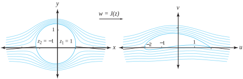
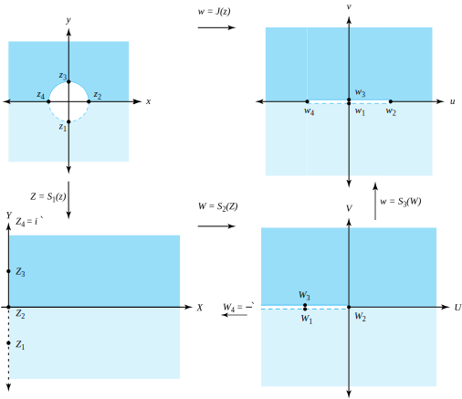
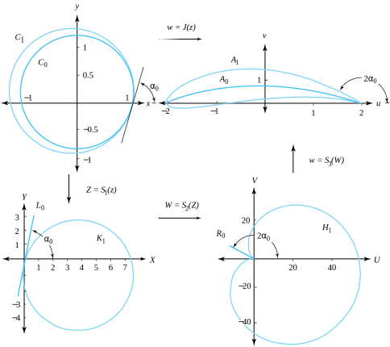
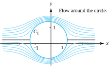
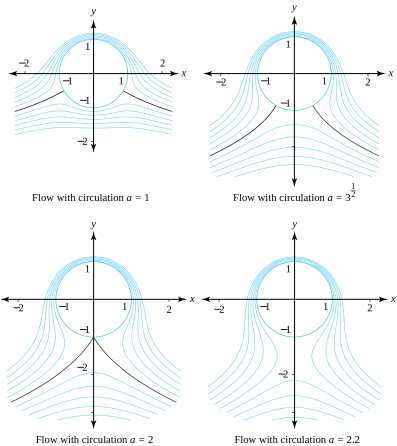
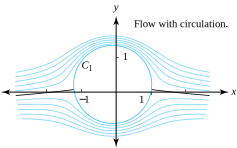
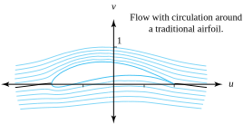
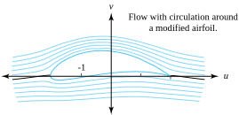

The Russian scientist N. E. Joukowski studied the function
\begin{equation*}
J(z) = z + \frac{1}{z}\text{.}
\end{equation*}
He showed that the image of a circle passing through \(z_1=1\) and containing the point \(z_2=-1\) is mapped onto a curve shaped like the cross section of an airplane wing. We call this curve the Joukowski airfoil. If the streamlines for a flow around the circle are known, then their images under the mapping \(w=J(z)\) will be streamlines for a flow around the Joukowski airfoil, as shown in Figure 10.8.1.

Figure10.8.1.Image of a fluid flow under \(w=J(z) =z+\frac{1}{z}\)
The mapping \(w=J(z)\) is two-to-one, because \(J(z) =J(\frac{1}{z})\text{,}\) for \(z\ne 0\text{.}\) The region \(|z|>1\) is mapped one-to-one onto the \(w\) plane slit along the portion of the real axis \(-2 \le u \le 2\text{.}\) To visualize this mapping, we investigate the implicit form, which we obtain by using the substitutions
The inverse of \(T(w) =\frac{w-2}{w+2}\) is \(S_3(z) = \frac{2+2z}{1-z}\text{.}\) If we use the notation \(S_1(z) = \frac{z-1}{z+1}\) and \(S_2(z)=z^2\text{,}\) then we can express \(J(z)\) as the composition of \(S_1, \, S_2\text{,}\) and \(S_3\text{:}\)
\begin{equation}
w = J(z) = S_3\Big(S_2\big(S_1(z)\big)\Big)\text{.}\tag{10.8.1}
\end{equation}
We can easily show that \(w=J(z) =z+\frac{1}{z}\) maps the four points \(z_1=-i, \, z_2=1, \, z_3=i\text{,}\) and \(z_4=-1\) onto \(w_1=0\text{,}\)\(w_2=2\text{,}\)\(w_3=0\text{,}\) and \(w_4=-2\text{,}\) respectively. However, the composition functions in Equation (10.8.1) must be considered in order to visualize the geometry involved. First, the bilinear transformation \(Z=S_1(z)\) maps the region \(|z|>1\) onto the right half-plane \(\mathrm{Re}(Z)>0\text{,}\) and the points \(z_1=-i, \, z_2=1, \, z_3=i\text{,}\) and \(z_4=-1\) are mapped onto \(Z_1=-i, \, Z_2=0, \, Z_3=i\text{,}\) and \(Z_4=i\infty\text{,}\) respectively. Second, the function \(W=S_2(Z)\) maps the right half plane onto the \(W\) plane slit along its negative real axis, and the points \(Z_1=-i, \, Z_2=0, \, Z_3=i\text{,}\) and \(Z_4=i\infty\text{,}\) are mapped onto \(W_1=-1, \, W_2=0, \, W_3=-1\text{,}\)and \(W_4=-\infty\text{,}\) respectively. Then the bilinear transformation \(w=S_3(W)\) maps the latter region onto the \(w\) plane slit along the portion of the real axis \(-2 \le u \le 2\text{,}\) and the points \(W_1=-1, \, W_2=0, \, W_3=-1\text{,}\) and \(W_4=-\infty\) are mapped onto \(w_1=0, \, w_2=2, \, w_3=0\text{,}\) and \(w_4=-2\text{,}\) respectively. These three compositions are shown in Figure 10.8.2.

Figure10.8.2.The composition mappings for \(J(z) =S_3\Big(S_2\big(S_1(z)\big)\Big)\)
The circle \(C_0\) with center \(c_0=ia\) on the imaginary axis passes through the points \(z_2=1\) and \(z_4=-1\) and has radius \(r_0=\sqrt{1+a^2}\text{.}\) With the restriction that \(0\lt a\lt 1\text{,}\) then this circle intersects the \(x\) axis at the point \(z_2\) with angle \(\alpha_0=\frac{\pi}{2}- \mathrm{Arctan}(a)\text{,}\) with \(\frac{\pi}{4}\lt \alpha_0\lt \frac{\pi}{2}\text{.}\) We want to track the image of \(C_0\) in the \(Z, \, W\text{,}\) and \(w\) planes. First, the image of this circle \(C_0\) under \(Z=S_1(z)\) is the line \(L_0\) that passes through the origin and is inclined at the angle \(\alpha_0\text{.}\) Second, the function \(W=S_2(Z)\) maps the line \(L_0\) onto the ray \(R_0\) inclined at the angle \(2\alpha_0\text{.}\) Finally, the transformation given by \(w=S_3(W)\) maps the ray \(R_0\) onto the arc of the circle \(A_0\) that passes through the points \(w_2=2\) and \(w_4=-2\) and intersects the \(x\) axis at \(w_2\) with angle \(2\alpha_0\text{,}\) where \(\frac{\pi}{2} \lt 2\alpha_0 \lt \pi\text{.}\) The restriction on the angle \(\alpha_0\text{,}\) and hence \(2\alpha_0\text{,}\) is necessary in order for the arc \(A_0\) to have a low profile. The arc \(A_0\) lies in the center of the Joukowski airfoil and is shown in Figure 10.8.3.

Figure10.8.3.The images of the circles \(C_0\) and \(C_1\) under the mapping \(J(z) =S_3\Big(S_2\big(S_1(z)\big)\Big)\)
If we let \(b\) be fixed, \(0\lt b\lt 1\text{,}\) then the larger circle \(C_1\) with center given by \(c_1=-h+i(1+h) b\) on the imaginary axis will pass through the points \(z_2=1\) and \(z_4=-1-2h\) and have radius \(r_1=(1+h)\sqrt{1+b^2}\text{.}\) The circle \(C_1\) also intersects the \(x\) axis at the point \(z_2\) at the angle \(\alpha_0\text{.}\) The image of circle \(C_1\) under \(Z=S_1(z)\) is the circle \(K_1\text{,}\) which is tangent to \(L_0\) at the origin. The function \(W=S_2(Z)\) maps the circle \(K_1\) onto the cardioid \(H_1\text{.}\) Finally, \(w=S_3(W)\) maps the cardioid \(H_1\) onto the Joukowski airfoil \(A_1\) that passes through the point \(w_2=2\) and surrounds the point \(w_4=-2\text{,}\) as shown in Figure 10.8.3. An observer traversing \(C_1\) counterclockwise will traverse the image curves \(K_1\) and \(H_1\) clockwise but will traverse \(A_1\) counterclockwise. Thus the points \(z_4, \, Z_4, \, W_4\text{,}\) and \(w_4\) will always be to the observer’s left.
Now we are ready to visualize the flow around the Joukowski airfoil. We start with the fluid flow around a circle (see Figure 10.7.9). This flow is adjusted with a linear transformation \(z^*=az+b\) so that it flows horizontally around the circle \(C_1\text{,}\) as shown in Figure 10.8.4. Then the mapping \(w=J(z^*)\) creates a flow around the Joukowski airfoil, per Figure 10.8.5.

Figure10.8.4.Flow around the circleFigure10.8.5.Flow around the Joukowski airfoil
Subsection10.8.1Flow with Circulation
The function \(F(z) =sz+\frac{s}{z}+\frac{k}{2\pi i}\mathrm{Log}(z)\) , where \(s>0\) and \(k\) is real, is the complex potential for a uniform horizontal flow past the unit circle \(|z|=1\text{,}\) with circulation strength \(k\) and velocity at infinity \(V_{\infty}=s\text{.}\) For illustrative purposes, we let \(s=1\) and use the substitution \(a=\frac{-k}{2\pi}\text{.}\) Now the complex potential has the form
\begin{equation}
F(z) = z + \frac{1}{z}+ai\mathrm{Log}(z)\text{,}\tag{10.8.2}
\end{equation}
For the flow given by \(\psi =c\text{,}\) where \(c\) is a constant, we have
\begin{equation*}
\psi(r\cos\theta, r\sin\theta) = \left(r-\frac{1}{r}\right)\sin\theta + a\ln r = c. \;\; \text{ (Streamlines) }\text{.}
\end{equation*}
Setting \(r=1\) in this equation, we get \(\psi(\cos\theta, \sin\theta) = 0\) for all \(\theta\text{,}\) so the unit circle is a natural boundary curve for the flow.
Points at which the flow has zero velocity are called stagnation points. To find them we solve \(F,'(z) =0\text{:}\) For the function in Equation (10.8.2) we have \(1 - \frac{1}{z^2} + \frac{a}{z} = 0\text{.}\) Multiplying through by \(z^2\) and rearranging terms gives \(z^2 + aiz - 1 = 0\text{.}\) Now we invoke the quadratic equation to obtain
\begin{equation*}
z = \frac{-ai\pm \sqrt{4-z^2}}{2} \text{ \big(Stagnation point(s)\big). }
\end{equation*}
If \(0 \le |a| \lt 2\text{,}\) then there are two stagnation points on the unit circle \(|z|=1\text{.}\) If \(a=2\text{,}\) then there is one stagnation point on the unit circle. If \(|a|>2\text{,}\) then the stagnation point lies outside the unit circle. We are mostly interested in the case with two stagnation points. When \(a=0\text{,}\) the two stagnation points are \(z = \pm 1\text{,}\) which is the flow discussed in Example 10.7.10. The cases \(a=1, \, a=\sqrt{3}, \, a=2\text{,}\) and \(a=2.2\) are shown in Figure 10.8.6.

Figure10.8.6.Flows past the unit circle with circulation \(a\)
We are now ready to combine the preceding ideas. For illustrative purposes, we consider a \(C_1\) circle with center \(c_0 = -0.15 + 0.23i\) that passes through the points \(z_2=1\) and \(z_4=-1.3\) and has radius \(r_0=0.23 \sqrt{\frac{13}{2}}\text{.}\) We use the linear transformation \(Z=S(z) =-0.15+0.23i+r_0z\) to map the flow with circulation \(k=-0.52p\) (or \(a=0.26\)) around \(|z|=1\) onto the flow around the circle \(C_1\text{,}\) as shown in Figure 10.8.7.

Figure10.8.7.Flow around \(C_1\)

Figure10.8.8.Flow around a Joukowski airfoil
Then we use the mapping \(w = J(Z) = Z + \frac{1}{Z}\) to map this flow around the Joukowski airfoil, as shown in Figure 10.8.8 and compare it to the flows shown in Figures 10.8.4 and Figure 10.8.5. If the second transformation in the composition given by \(w = J(z) = S_3\Big(S_2\big(S_1(z)\big)\Big)\) is modified to be \(S_2(z) =z^{1.925}\text{,}\) then the image of the flow shown in Figure 10.8.7 will be the flow around the modified airfoil shown in Figure 10.8.9. The advantage of this latter airfoil is that the sides of its tailing edge form an angle of 0.15\(\pi\) radians, or \(27^\circ\text{,}\) which is more realistic than the angle of \(0^\circ\) of the traditional Joukowski airfoil.

Figure10.8.9.Flow with circulation around a modified Joukowski airfoil
ExercisesExercises
1.
Find the inverse of the Joukowski transformation.
2.
Consider the Joukowski transformation \(w=z+\frac{1}{z}\text{.}\)
(a)
Show that the circles \(C_{r} = t\{|z| = r : r > 1\}\) are mapped onto the ellipses
Show that the ray \(r>0
\frac{u^2}{4\cos^2\alpha} - \frac{v^2}{4\sin ^2\alpha} = 1\text{.}\)$
3.
Let \(C_0\) be a circle that passes through the points 1 and \(-1\) and has center \(c_0=ia\text{.}\)
(a)
Find the equation of the circle \(C_0\text{.}\)
(b)
Show that the image of the circle \(C_0\) under \(w=\frac{z-1}{z+1}\) is a line \(L_0\) that passes through the origin.
(c)
Show that the line \(L_0\) is inclined at the angle \(\alpha_0 = \frac{\pi}{2} - \mathrm{Arctan}(a)\text{.}\)
4.
Show that a line through the origin is mapped onto a ray by the mapping \(w=z^2\text{.}\)
5.
Let \(R_0\) be a ray through the origin inclined at an angle \(\beta_0\text{.}\)
(a)
Show that the image of the ray \(R_0\) under \(w=\frac{2+2z}{1-z}\) is an arc \(A_0\) of a circle that passes through 2 and \(-2\text{.}\)
(b)
Show that the arc \(A_0\) is inclined at the angle \(\beta_0\text{.}\)
6.
Show that a circle passing through the origin is mapped onto a cardioid by \(w=z^2\text{.}\) Show that the cusp in the cardioid forms an angle of \(0^\circ\text{.}\)
7.
Let \(H_1\) be a cardioid whose cusp is at the origin. The image of \(H_1\) under \(w=\frac{2+2z}{1-z}\) will be a Joukowski airfoil. Show that trailing edge forms an angle of \(0^\circ\text{.}\)
8.
Consider the modified Joukowski airfoil when \(W = S_2(Z) = Z^{1.925}\) is used to map the \(Z\) plane onto the \(W\) plane. Refer to Figure 10.8.10 and discuss why the angle of the trailing edge of the modified Joukowski airfoil \(A_1\) forms an angle of 0.15\(\pi\) radians. \hint{The image of the circle \(C_0\) is the line \(L_0\text{,}\) then two rays \(R_{0.}1\) and \(R_{0.2}\text{,}\) and then two arcs \(A_{0,1}\) and \(A_{0,2}\) in the respective \(Z, \, W\text{,}\) and \(w\) planes. The image of the circle \(C_1\) is the circle \(K_1\text{,}\) then the “cardioid like” curve \(H_1\text{,}\) then the modified Joukowski airfoil \(A_1\text{.}\)}